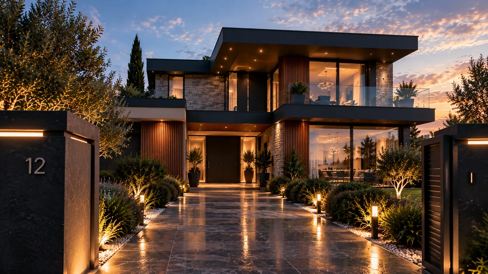
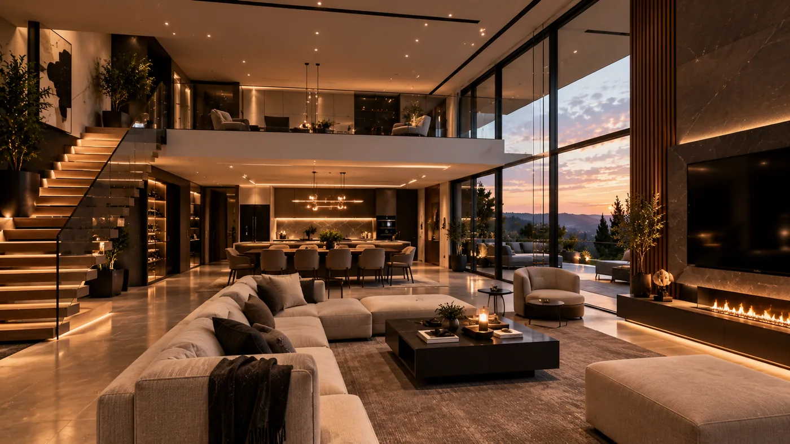
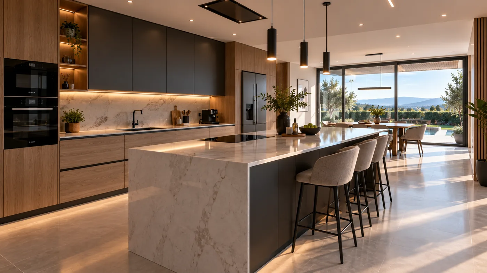
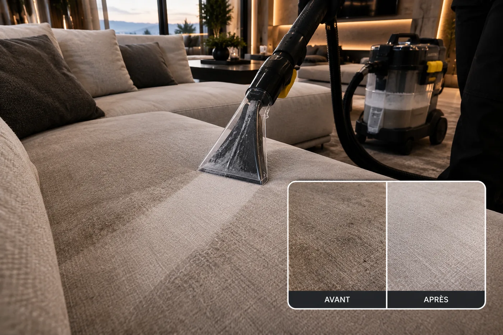
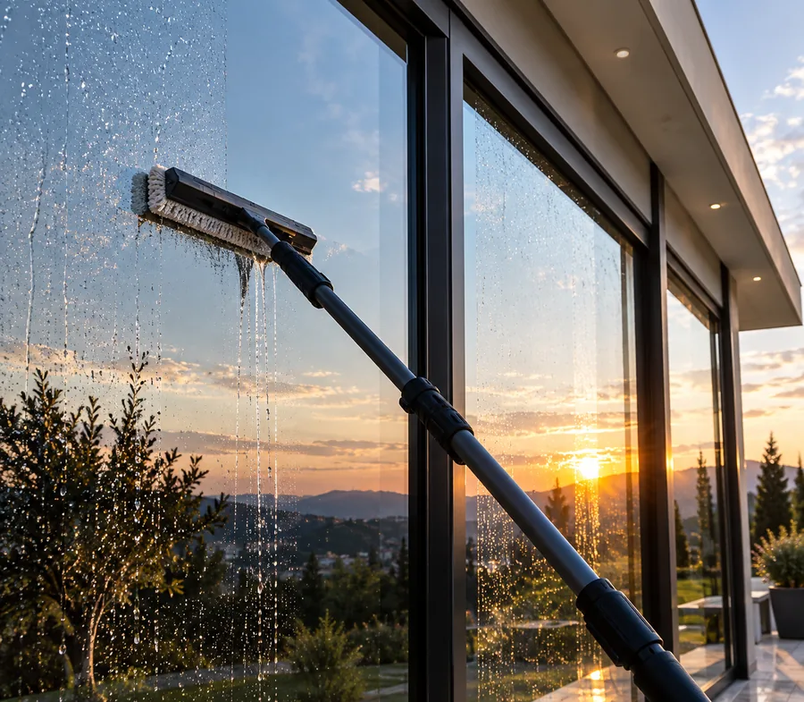

« Le canapé en tissu clair retrouvé comme neuf après un nettoyage en profondeur, sans aucune odeur de produit. Un vrai soin du détail. »

Note Google 4,6 sur 5. Zone d'intervention : 04100, Manosque et alentours. 100% de produits professionnels utilisés.
Nos prestations
Un soin exigeant, pensé pour chaque surface
06prestations
Six prestations complémentaires, exécutées avec la même rigueur : celle d'une équipe qui traite votre intérieur comme un patrimoine à préserver.
-

Nettoyage approfondi
Une remise à neuf complète, pièce par pièce : sols, surfaces, vitres et recoins retrouvent un état impeccable, digne d'un intérieur neuf.
-

Nettoyage standard
Un entretien régulier et fiable qui préserve, semaine après semaine, la qualité d'un intérieur déjà soigné.
-
Bureaux & espaces professionnels
Des locaux irréprochables du matin au soir, pour accueillir vos clients et vos équipes dans un cadre à la hauteur de votre image.
-

Nettoyage d'ameublement
Canapés, fauteuils et assises traités en profondeur avec des méthodes respectueuses de chaque textile.
-
Nettoyage de matelas
Un traitement en profondeur, respectueux des matières, pour un couchage plus sain nuit après nuit.
-

Textiles, sols & vitres
Le détail qui change tout : sols retrouvés, vitres parfaitement claires, textiles ravivés jusque dans les finitions.
Pourquoi nous choisir
Cinq engagements qui structurent chaque intervention
Au-delà du résultat visible, une façon de travailler qui ne change jamais — que le chantier soit modeste ou conséquent.
-
Qualité
Un niveau d'exigence constant, du premier geste au contrôle final, quelle que soit la surface confiée.
-
Ponctualité
Des créneaux tenus avec sérieux : votre temps et votre organisation sont respectés à chaque intervention.
-
Produits & matériel
Des produits professionnels et un matériel entretenu, choisis pour préserver chaque surface autant que pour la révéler.
-
Professionnalisme
Une équipe discrète, formée et soigneuse, qui traite votre intérieur avec le même respect que le sien.
-
Flexibilité
Des interventions adaptées à votre rythme et à vos imprévus, sans jamais rogner sur la qualité du travail.
Notre exigence
Une méthode, pas une routine
Chaque intervention suit le même protocole, pensé pour protéger vos surfaces autant que pour les révéler.
-
01
Diagnostic
Chaque intérieur est observé avant d'être traité : matériaux, textiles, points sensibles identifiés un à un.
-
02
Protocole adapté
Produits, méthodes et intensité sont choisis en fonction de chaque surface, jamais standardisés.
-
03
Exécution soignée
Un travail méthodique, sans précipitation, avec la même attention du premier au dernier geste.
-
04
Contrôle qualité
Une vérification finale avant de considérer une intervention terminée — le détail fait la différence.
À propos
Romain Fedi, fondateur de Deep Clean
Deep Clean est né d'une conviction simple : un intérieur bien entretenu se remarque, mais un intérieur entretenu avec exigence se ressent. Romain Fedi a fondé Deep Clean à Manosque pour apporter aux particuliers comme aux professionnels un niveau de soin habituellement réservé à l'hôtellerie haut de gamme.
Chaque intervention est pensée comme un service de conciergerie : discrétion, ponctualité, et un respect scrupuleux des matières, des meubles et des lieux confiés.
Romain Fedi
Fondateur & responsable Deep Clean
Chaque intervention est pensée comme si c'était notre propre maison.
Romain Fedi — Deep Clean
Zone d'intervention
Manosque et les communes alentour
Basés à Manosque, nous intervenons chez les particuliers et les professionnels dans un rayon d'environ 20 minutes autour de l'agglomération.
- Manosque
- Forcalquier
- Volx
- Pierrevert
- Gréoux-les-Bains
- Sainte-Tulle
- Villeneuve
- Corbières
Avis clients
Ce que nos clients retiennent
4,6 / 5
Avis Google vérifiés · Manosque
« Intervention rapide et sérieuse avant la mise en vente de notre maison : le résultat a clairement fait la différence pour les visites. »
« Entretien régulier de nos bureaux impeccable, toujours à l'heure et discret pendant les horaires d'ouverture. »
« Nettoyage de matelas très professionnel, produits respectueux et conseils utiles pour l'entretien au quotidien. »
« Vitres et baies parfaitement claires, on ne voit presque plus la différence entre l'intérieur et le jardin. Un travail minutieux. »
« Ponctuel, soigné et de très bon conseil sur les produits à utiliser ensuite. Je recommande sans hésiter. »
Questions fréquentes
Tout ce qu'il faut savoir avant de nous confier votre intérieur
Sous quel délai pouvez-vous intervenir ?
Nous répondons à chaque demande sous 24 à 48h avec une proposition de créneau. Pour les besoins urgents — remise en état avant une vente ou un état des lieux — nous nous efforçons de nous adapter à votre calendrier.
Quels produits utilisez-vous ?
Nous travaillons exclusivement avec des produits professionnels, choisis en fonction de chaque surface et de chaque textile, pour un résultat efficace sans agresser vos matériaux.
Quelle est votre zone d'intervention ?
Nous intervenons à Manosque et dans les communes alentour : Forcalquier, Volx, Pierrevert, Gréoux-les-Bains, Sainte-Tulle et leurs environs.
Êtes-vous assurés ?
Oui, notre activité est couverte par une assurance responsabilité civile professionnelle, pour intervenir chez vous en toute sérénité.
Comment se passe l'intervention si un membre de l'équipe doit entrer chez moi ?
La confiance est au cœur de notre métier. Chaque intervenant est identifié, sérieux et habitué à travailler en toute discrétion, que vous soyez présent ou non. Les accès et les éventuelles clés qui nous sont confiés sont gérés avec la plus grande rigueur, et tout ce qui est vu ou manipulé chez vous reste strictement confidentiel.
En quoi consiste votre volet conciergerie ?
Au-delà du nettoyage ponctuel, nous accompagnons certains propriétaires dans le suivi régulier de leur bien : coordination des passages, attention portée aux détails entre deux séjours ou deux visites, vigilance sur l'état général du logement. Un service pensé pour les propriétaires exigeants qui souhaitent garder un bien impeccable sans avoir à s'en soucier.
Contact & devis
Parlons de votre intérieur
Décrivez votre besoin, nous revenons vers vous rapidement avec un devis adapté.